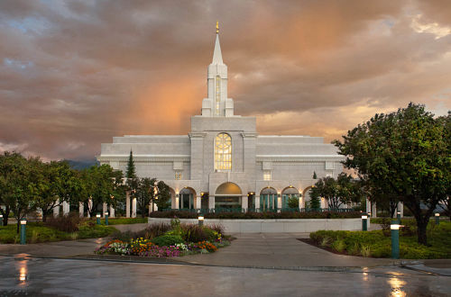

Bountiful, UT Temple
The Bountiful Utah Temple was the eighth temple built in Utah and the first built in Davis County. The floor plan created for the Bountiful Utah Temple was adapted and used for the Mount Timpanogos Utah Temple. The Bountiful Utah Temple is one of only two temples dedicated by President Howard W. Hunter during his brief time as president of the Church. (The other is the Orlando Florida Temple.) At the groundbreaking ceremony for the Bountiful Utah Temple, some 7,500 people gathered on the site with another 2,500 viewing the proceedings by remote video. The crowd was so large, some attenders opted to sit on the steep hillside east of the site. President Gordon B. Hinckley alluded to the forthcoming announcements of the Hong Kong China Temple, Preston England Temple, and Hartford Connecticut Temple at the Bountiful Utah Temple groundbreaking, indicating that official announcements would not be made until sites had been acquired and approved. During the six weeks that the Bountiful Utah Temple was open for public tours, 870,361 visitors walked its beautiful rooms and hallways, assisted by 45,000 volunteers. At the 28 dedicatory sessions of the Bountiful Utah Temple, 201,655 members were in attendance—the largest number of attenders at a temple dedication in the history of the Church. On May 22, 2016, lightning struck the angel Moroni atop the Bountiful Utah Temple, cracking the exterior gold leaf and removing chunks from the face and back of the fiberglass statue. On June 1, 2016, a replacement Moroni was set in place.